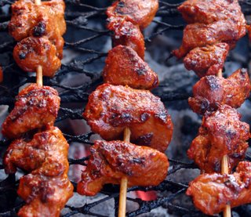

Ingredients
500 gr lean beef
1 tbs fresh grated ginger
2 cloves crushed garlic
½ tsp Tamarind paste
2 tbs oil
2 tbs water
Long skewers for grilling
Method: add the ginger, garlic, tomatoes, Tamarind, oil and water into a large
bowl and mix well to make a marinade. Cut the beef into bite-size pieces and add
to the marinade.